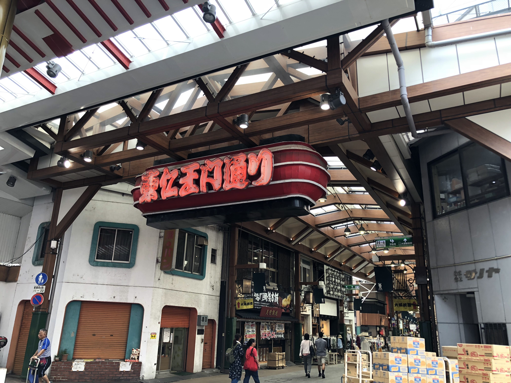

Nagoya was my shortest stay in
the city, but during my time there, the quiet yet modern city had
beautiful architecture and definitely exceeded my expectations for a
city that is visited less by tourists.
During my stay, I felt a more authentic visit because Nagoya has less
tourists and friendly citizens which made me feel welcome in their city.
|

Nagoya at night. Bright lights and lively.
|
Oasis
21, is a structure that is adjacent to the Nagoya TV tower which is
shown in the picture. From Oasis 21, a view of the city can be seen as
well as the beautiful lights of the TV tower.
|
Local Market in Nagoya that sold many vintage items from clothes to toys.
|
Back to the top!
|